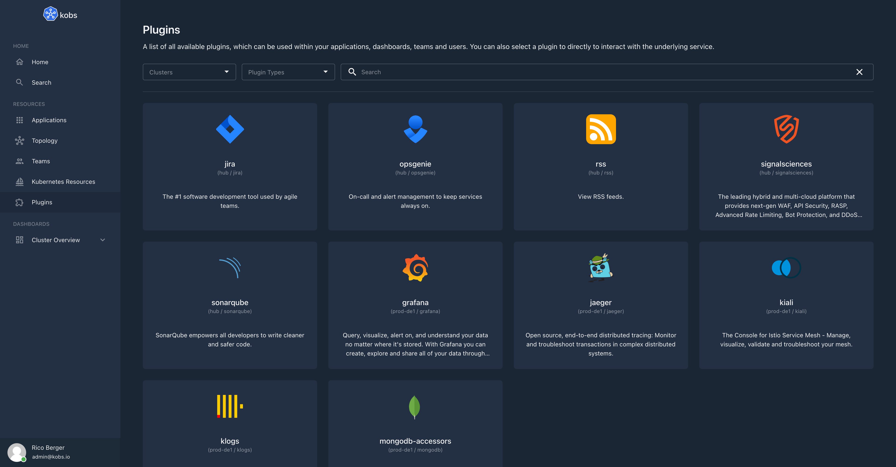

Getting Started
Plugins can be used to extend the functionality of kobs. For example you can use Prometheus to display metrics, Elasticsearch to display logs or Jaeger to display traces for your application within kobs.
All the configured plugins can be found on the home page of kobs. From this page you can use the configured plugins directly.

Specification
Plugins can also be used as preview for an application or within a dashboard panel:
| Field | Type | Description | Required |
|---|---|---|---|
| cluster | string | The name of the cluster on which the plugin is configured. This field can be omitted, when the same cluster should be used as for the applicatiom, user, team or dashboard where the plugin is used. | No |
| name | string | The name of the plugin as it is defined in the configuration file for the hub or cluster. Or one of the special values applications, applicationgroups, applicationinsights topology, teams, dashboards or resources for plugins where the type is core. |
Yes |
| type | string | The type of the plugin as it is defined in the configuration file for the hub or cluster or core for the built-in plugins. |
Yes |
| options | any | Plugin specific options as they are defined at the plugins page (e.g. PromQL query). | Yes |
Built-in Plugins
The following built-in plugins can be used when the type of the plugin is set to core.
applications
The applications plugin can be used to display a list of applications for a team. The plugin requires the following options:
| Field | Type | Description | Required |
|---|---|---|---|
| team | string | The name of the team for which the applications should be shown. This must match a value of a teams id property. If the value is not provided the teams of the current user are used. |
No |
plugin:
name: applications
type: core
options:
team: dia@kobs.io
applicationgroups
The applicationgroups plugin can be used to display a list of applications for a team grouped by their cluster, namespace and name values. The plugin requires the following options:
| Field | Type | Description | Required |
|---|---|---|---|
| groups | []string | A list of groups by which the applications should be grouped. The following values can be used cluster, namespace or name. |
Yes |
| team | string | The name of the team for which the applications should be shown. This must match a value of a teams id property. If the value is not provided the teams of the current user are used. |
No |
plugin:
name: applicationgroups
type: core
options:
groups:
- namespace
- name
applicationinsights
The applicationinsights plugin can be used to display the insights of an application within a dashboard. The plugin requires the following options:
| Field | Type | Description | Required |
|---|---|---|---|
| cluster | string | The cluster of the application. | Yes |
| namespace | string | The namespace of the application. | Yes |
| name | string | The name of the application. | Yes |
| direction | string | The direction in which the insight panels should be displayed. Must be column or row. The default value is column. |
No |
plugin:
name: applicationinsights
type: core
options:
cluster: "<% $.cluster %>"
namespace: "<% $.namespace %>"
name: "<% $.name %>"
direction: row
topology
The topology plugin can be used to display the topology graph of an application within a dashboard. The plugin requires the following options:
| Field | Type | Description | Required |
|---|---|---|---|
| cluster | string | The cluster of the application. | Yes |
| namespace | string | The namespace of the application. | Yes |
| name | string | The name of the application | Yes |
plugin:
name: topology
type: core
options:
cluster: "<% $.cluster %>"
namespace: "<% $.namespace %>"
name: "<% $.name %>"
teams
The teams plugin can be used to display a list of teams for the currently authenticated user.
plugin:
name: teams
type: core
dashboards
The dashboards plugin can be used to display a list of links to dashboards within a dashboard. Each link can contain multiple dashboards.
| Field | Type | Description | Required |
|---|---|---|---|
| title | string | The title of the page for the dashboards. | Yes |
| description | string | The description of the page for the dashboards. | Yes |
| dashboards | []Dashboard | A list of dashboards which will be shown on the linked page. | Yes |
plugin:
name: dashboards
type: core
options:
- title: My Dashboards Page
description: My Dashboards Page Description
dashboards:
- title: Dashboard 1
cluster: cluster1
namespace: namespace1
name: name1
- title: Dashboard 2
cluster: cluster2
namespace: namespace2
name: name2
resources
The resources plugin can be used to display Kubernetes resources within a dashboard. The plugin can be used in the notifications or in a panel within a dashboard.
Panel Options
| Field | Type | Description | Required |
|---|---|---|---|
| clusters | []string | A list of clusters for which the resources should be shown. | Yes |
| namespaces | []string | A list of namespaces for which the resources should be shown. | Yes |
| resources | []string | A list of resources for which the resources should be shown. The following strings can be used as resource: cronjobs, daemonsets, deployments, jobs, pods, replicasets, statefulsets, endpoints, horizontalpodautoscalers, ingresses, networkpolicies, services, configmaps, persistentvolumeclaims, persistentvolumes, poddisruptionbudgets, secrets, serviceaccounts, storageclasses, clusterrolebindings, clusterroles, rolebindings, roles, events, nodes. A Custom Resource can be used as follows <name>.<group> (e.g. vaultsecrets.ricoberger.de). |
Yes |
| paramName | string | The name of the parameter which should be used for filtering the resources. Must be labelSelector or fieldSelector. |
No |
| param | string | The parameter which is used to filter the resources. | No |
| columns | []Column | An optional list of columns to customize the shown fields for a resource. | No |
| filter | string | An optional filter using JSONPath to filter the list of resources. | No |
Column
| Field | Type | Description | Required |
|---|---|---|---|
| title | string | A title for the column. | Yes |
| resource | string | The name of the resource for which the column should be used. | Yes |
| jsonPath | string | The JSONPath which should be used to select the value from the resource manifest file. | Yes |
| type | string | An optional type for formatting the column values. Currently only date is supported as special formatter. |
No |
Examples
plugin:
name: resources
type: core
options:
clusters:
- kobs
namespaces:
- bookinfo
resources:
- pods
- deployments
- services
paramName: labelSelector
param: app=productpage
Note
If you want to display Kubernetes resources from the same cluster / namespace as it is used in an application / user / team / dashboard you can use the following JSONPath to set the values: <% $.cluster %>, <% $.namespace %> and <% $.name %>. For example the following configuration would display all pods and deployments with from the same satellite, cluster and namespace where the application lives.
plugin:
name: resources
type: core
options:
clusters:
- "<% $.cluster %>"
namespaces:
- "<% $.namespace %>"
resources:
- pods
- deployments
paramName: labelSelector
param: app.kubernetes.io/name="<% $.name %>"
Example 1 with Custom Columns
plugin:
name: resources
type: core
options:
clusters:
- "<% $.cluster %>"
namespaces:
- bookinfo
resources:
- pods
- deployments
paramName: labelSelector
param: app=reviews
columns:
- title: Image
resource: pods
jsonPath: "$.spec.containers[?(@.name==='bookinfo')].image"
- title: Creation Time
resource: pods
jsonPath: "$.metadata.creationTimestamp"
type: date
- title: Image
resource: deployments
jsonPath: "$.spec.template.spec.containers[*].image"
Example 2 with Custom Columns
plugin:
name: resources
type: core
options:
clusters:
- "<% $.cluster %>"
namespaces:
- bookinfo
resources:
- vaultsecrets.ricoberger.de/v1alpha1
columns:
- title: Status
resource: vaultsecrets.ricoberger.de/v1alpha1
jsonPath: "$.status.conditions[*].status"
- title: Reason
resource: vaultsecrets.ricoberger.de/v1alpha1
jsonPath: "$.status.conditions[*].reason"
- title: Type
resource: vaultsecrets.ricoberger.de/v1alpha1
jsonPath: "$.status.conditions[*].type"
- title: Message
resource: vaultsecrets.ricoberger.de/v1alpha1
jsonPath: "$.status.conditions[*].message"
- title: Last Transition Time
resource: vaultsecrets.ricoberger.de/v1alpha1
jsonPath: "$.status.conditions[*].lastTransitionTime"
type: date
static
The static plugin can be used within the variables section of a dashboard, to define a static list of variable values. The options for this plugin is a list of strings with the possible values for the variable:
variables:
- name: var_reporter
label: Reporter
plugin:
name: static
type: core
options:
- destination
- source